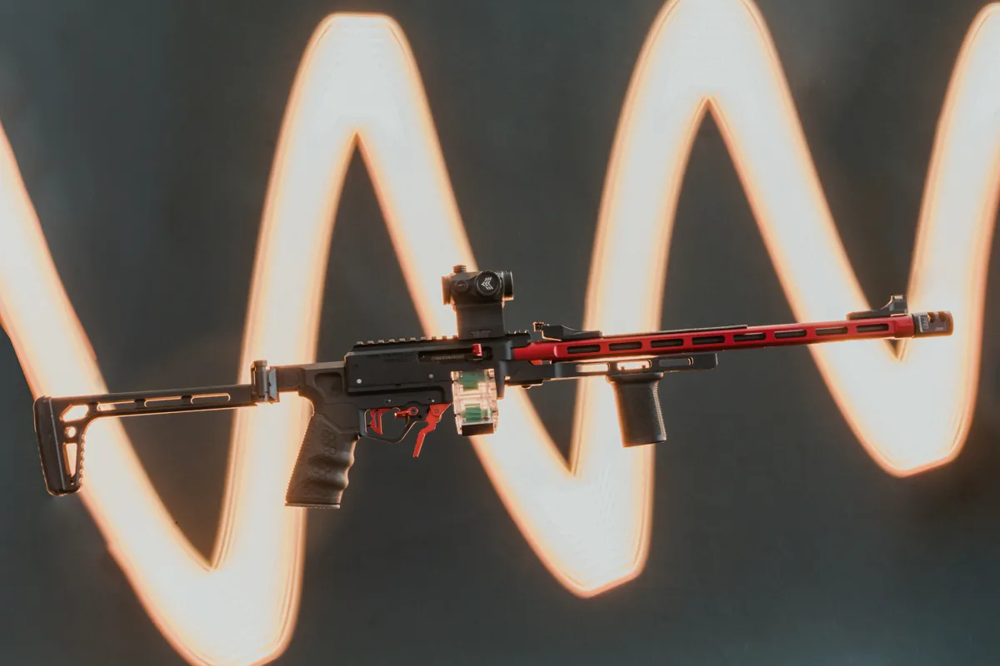

▶ ROLL 01
TANDEMKROSS • IN-HOUSE
STUDIO + LOCATION
● PROOF SELECT

LIGHT PAINTING • BLACK FRIDAY 2025
★ Commercial Work
Product
Lifestyle
Commercial & Product: TandemKross
TandemKross's product and lifestyle photography: light-painted studio work for Black Friday, clean white-sweep catalog shots, and on-location builds in the New Hampshire woods, at range days and at matches. These photos are used across the brand's website, emails, ads and trade-show booth.
View the Commercial Proof Sheet ↓